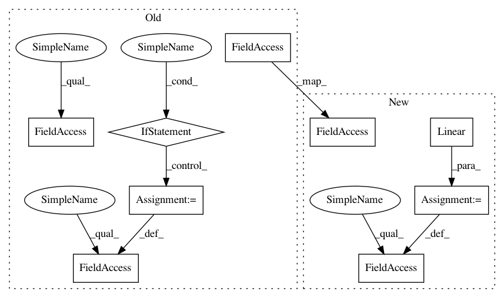

69f5869f3b6d190ed99e156a932634393ab361dd,python/dgl/nn/pytorch/conv/gatconv.py,GATConv,__init__,#GATConv#Any#Any#Any#Any#Any#Any#Any#Any#,47
Before Change
self.attn_l = nn.Parameter(th.FloatTensor(size=(1, num_heads, out_feats)))
self.attn_r = nn.Parameter(th.FloatTensor(size=(1, num_heads, out_feats)))
self.feat_drop = nn.Dropout(feat_drop)
self.attn_drop = nn.Dropout(attn_drop)
self.leaky_relu = nn.LeakyReLU(negative_slope)
if residual:
if self._in_dst_feats != out_feats:
self.res_fc = nn.Linear(
self._in_dst_feats, num_heads * out_feats, bias=False)
else:
self.res_fc = Identity()
else:
self.register_buffer("res_fc", None)
self.reset_parameters()
self.activation = activation
def reset_parameters(self):
Reinitialize learnable parameters.
After Change
[ 0.5041, -1.3025],
[ 0.6568, 0.7048]],
[[-0.2688, 1.0543],
[-0.0315, -0.9016],
[ 0.3943, 0.5347]],
[[-0.6066, 1.0268],
[-0.5945, -0.4801],
[ 0.1594, 0.3825]]], grad_fn=<BinaryReduceBackward>)
def __init__(self,
in_feats,
out_feats,
num_heads,
feat_drop=0.,
attn_drop=0.,
negative_slope=0.2,
residual=False,
activation=None,
allow_zero_in_degree=False):
super(GATConv, self).__init__()
self._num_heads = num_heads
self._in_src_feats, self._in_dst_feats = expand_as_pair(in_feats)
self._out_feats = out_feats
self._allow_zero_in_degree = allow_zero_in_degree
In pattern: SUPERPATTERN
Frequency: 4
Non-data size: 9
Instances
Project Name: dmlc/dgl
Commit Name: 69f5869f3b6d190ed99e156a932634393ab361dd
Time: 2020-08-12
Author: xiaotj1990327@gmail.com
File Name: python/dgl/nn/pytorch/conv/gatconv.py
Class Name: GATConv
Method Name: __init__
Project Name: dmlc/dgl
Commit Name: 69f5869f3b6d190ed99e156a932634393ab361dd
Time: 2020-08-12
Author: xiaotj1990327@gmail.com
File Name: python/dgl/nn/pytorch/conv/gatconv.py
Class Name: GATConv
Method Name: __init__
Project Name: reinforceio/tensorforce
Commit Name: 82a059d89d5f5ebc77c6a3f0b8ac4072a3979104
Time: 2018-08-03
Author: alexkuhnle@t-online.de
File Name: tensorforce/core/networks/layer.py
Class Name: Conv2d
Method Name: __init__
Project Name: rusty1s/pytorch_geometric
Commit Name: 1210a05912b97ca9b9d87a27aae34821242b7196
Time: 2020-05-31
Author: matthias.fey@tu-dortmund.de
File Name: torch_geometric/nn/dense/dense_sage_conv.py
Class Name: DenseSAGEConv
Method Name: __init__
Project Name: rusty1s/pytorch_geometric
Commit Name: 16c6e0a18c6684b8faface5bc24344f0aafdcdea
Time: 2020-05-22
Author: matthias.fey@tu-dortmund.de
File Name: torch_geometric/nn/dense/dense_sage_conv.py
Class Name: DenseSAGEConv
Method Name: __init__